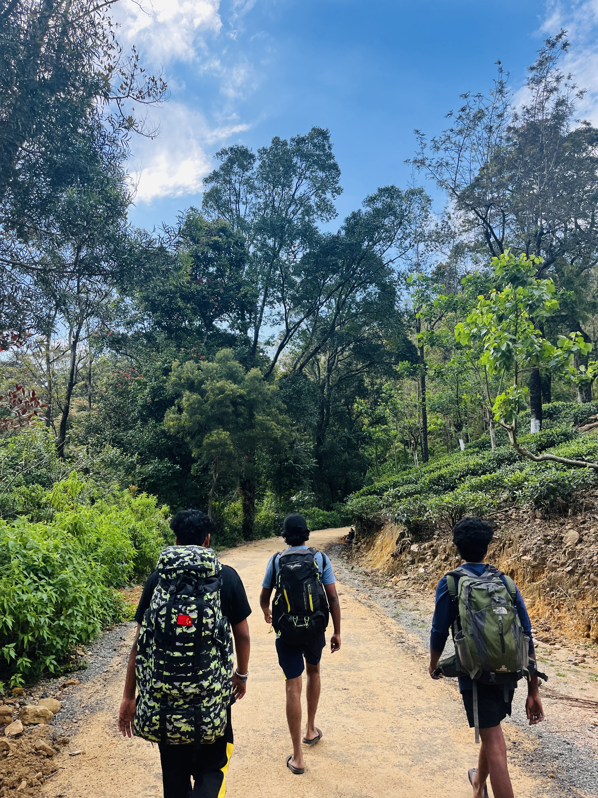
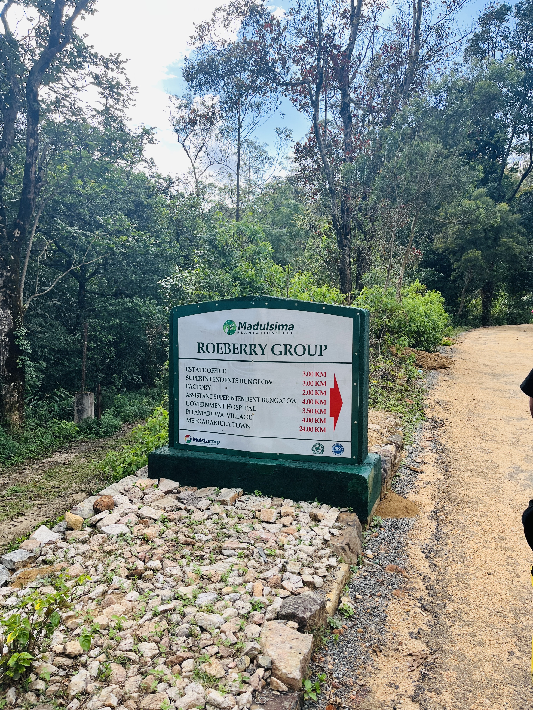
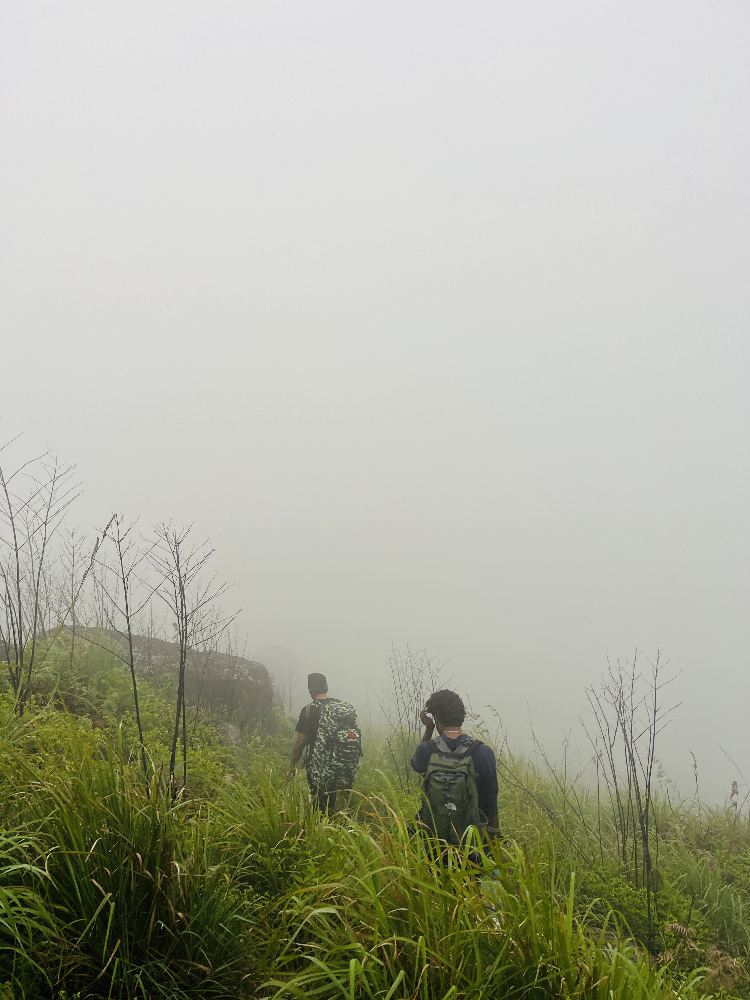
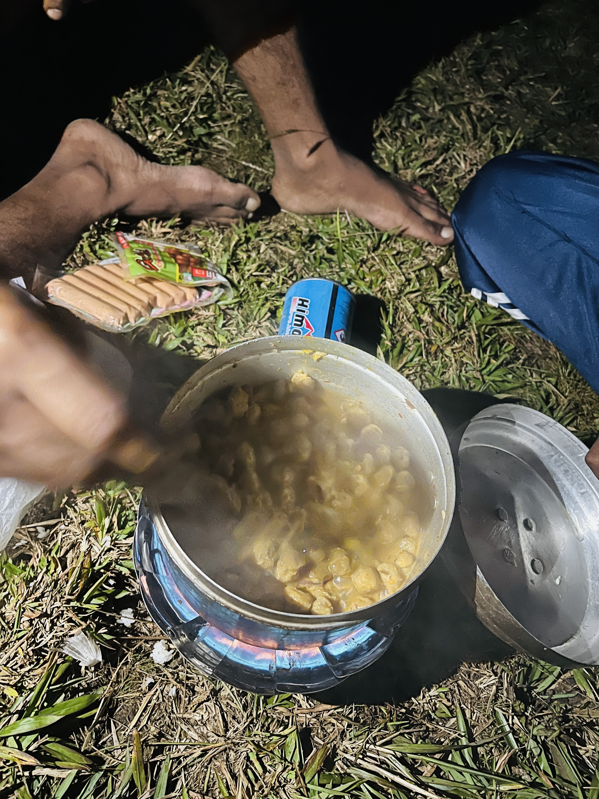
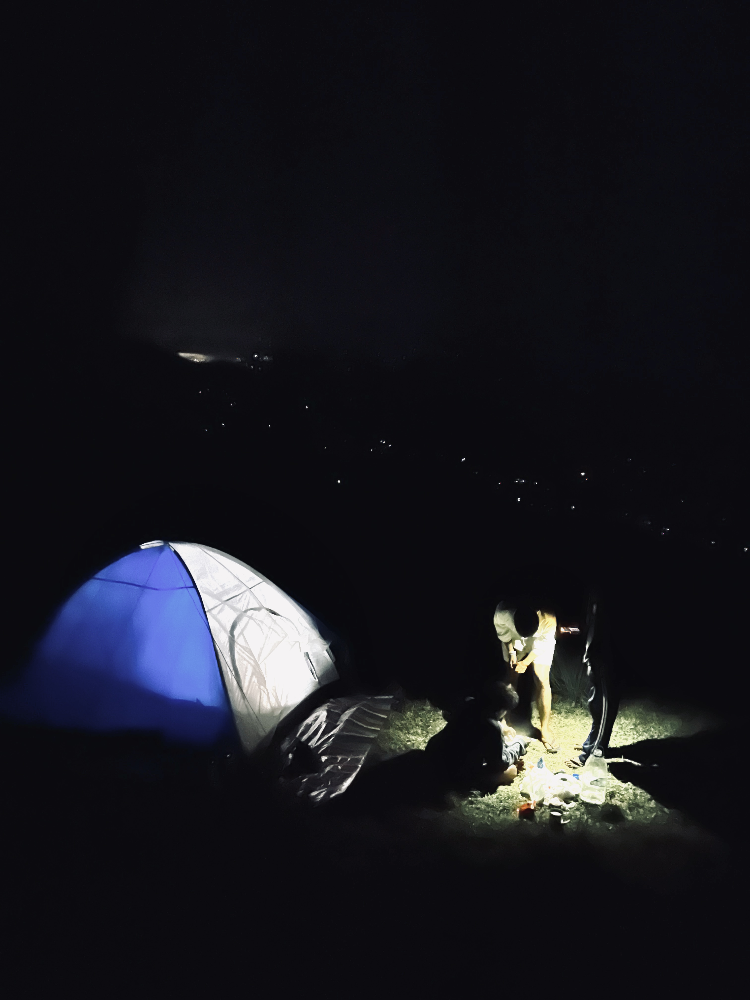
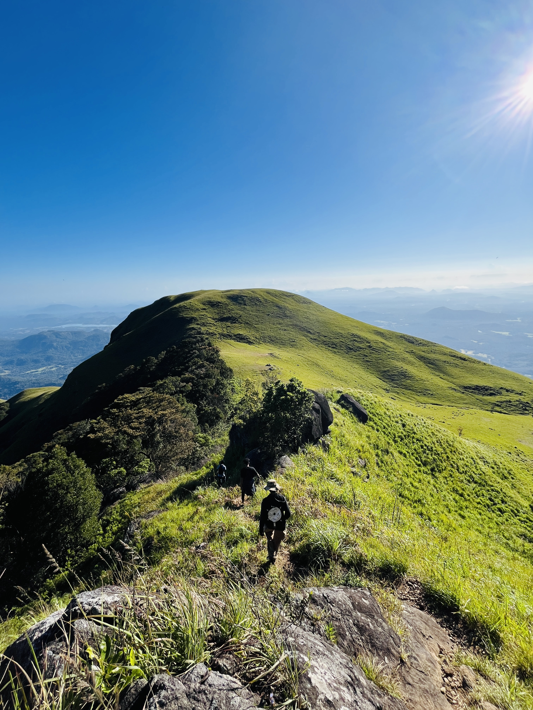

The Summit We Found in the Morning Mist

March 15th. Four of us, bags packed, ready to go. The plan was simple — catch a bus from Passara to Pitamaruwa and start the hike from there. Simple plans always have a twist though. We got the bus, settled in, watching the roads get narrower and narrower. Then the bus stopped. Road was broken. That was as far as it was going.
So we walked. More than expected, more than planned, more than anyone's legs were ready for before the actual hike even started. Not ideal. But here's the thing — it turned into a warm-up nobody asked for but everyone needed. Pro tip if you're planning this: don't go from Passara. Go to Meegahakiula bus stand and get the Pitamaruwa bus from there. Better road, better chance the bus actually gets you where you need to go.

By the time we actually started hiking it was 3 PM. Three in the afternoon. Same energy as the Narangala late start, different mountain. The trail itself was easy — no crazy technical sections, nothing that felt dangerous. Just a steady climb upward through the kind of landscape that makes you forget you're tired.
The extra walking from the bus stop had already warmed up the legs, so we hit a decent pace. Four people moving together, conversation flowing, the afternoon light doing that thing where everything looks golden. The trail was manageable, no guide needed, just follow the path and keep going up.

The higher we went, the thicker it got. Mist rolling in, clouds sitting low, the views that should have been opening up just disappearing into white. We kept going, expecting it to clear. It didn't. By the time we were in the upper sections, visibility was short and everything had that moody, atmospheric thing going on that looks great in photos but makes finding the perfect campspot genuinely difficult.
We walked around up there longer than planned, looking for a good flat section. The mist had a way of making everywhere look the same. Eventually we just picked a spot, made the call, and set up the tent. Sometimes you stop looking for perfect and just make where you are work.

Turns out we had a good chef in the group. Like actually good. Dinner was rice, soya meat, and sausages cooked on a stove up the mountain. Proper food. Not noodles, not crackers — actual dinner. The kind of meal that feels twice as good when you've been walking all day and there's mist all around you and the temperature is dropping.
We had brought 23 litres of water between four people. Twenty three. Way too much. We were carrying that weight up the whole climb for a one-night stay.Our backs definitely had opinions about the extra weight. Morning was noodles and bread, simple and quick, because the summit was waiting and we'd been too misty and cloud-covered the night before to properly find it.

The tent floor was not flat. At all. You don't fully appreciate a flat surface until you're trying to sleep on a slope at altitude with mist outside and your whole body slowly sliding. We slept about two hours — maybe. The rest of the night was a cycle of almost sleeping, waking up, adjusting position, almost sleeping again. It wasn't cold enough to be miserable, just uncomfortable enough to be awake.
The kind of night that's genuinely terrible while it's happening and becomes a great story the moment you're safely descended. By the time morning light started coming through the tent, everyone was equally unrested and equally ready to go find that peak we'd missed the evening before.

Morning came and so did the clarity. The heavy mist had softened overnight into something lighter, and we packed up camp, ate breakfast, and went looking for the actual peak. We found it. And when we did, the sleep deprivation, the extra walking from the bus, the 23 litres of water — all of it just disappeared.
Standing at the top of Queen Mountain in the morning mist, four people who'd barely slept on a slope, looking out at the landscape slowly revealing itself as the clouds shifted — that's the moment the whole trip was for. Not perfectly planned. Not perfectly executed. But perfectly real. That's what makes it worth putting in a blog.
Getting There: Don't make our mistake — skip the Passara bus. Go to Meegahakiula bus stand and catch the Pitamaruwa bus from there. The road is better and you'll actually arrive closer to the trailhead. We don't know the exact bus times, so check locally when you get there.
What to Bring: Good hiking shoes — the trail is easy but you'll be walking more than expected. Water — but don't overdo it like us (23L for 4 people overnight is way too much). A stove for proper meals if you're camping overnight. Warm layers — it gets misty and cool up top. A good flat campsite takes effort to find, so scout before setting up tent.
About Camping: Find a flat spot before it gets dark — this is critical. The upper area has some tricky uneven ground and setting up in poor light on a slope is exactly as bad as it sounds. Check your tent floor before committing to a spot. Sleep quality matters more than you think when you have a summit to find in the morning.
Key Info: Easy trail difficulty • Start before noon if possible — a 3 PM start is risky for finding your campspot in good light • Overnight camping recommended to catch the summit in morning clarity • Misty conditions are common — embrace it or plan for the dry season • 4 is a good group size • The summit is worth every wrong decision that gets you there.
Real Talk: The trail is easy. The logistics are the tricky part — getting the right bus, carrying the right amount of water, finding a flat campsite before dark. Get those right and Queen Mountain rewards you. Get them wrong (like us) and you still have a great story.
Yes. But with a better bus route, half the water, and a very careful inspection of the tent floor situation before dark.
Queen Mountain doesn't get the same attention as the famous peaks. You won't find it in every hiking guide. You find out about it from someone who's been, and then you go, and then you become that person telling someone else about it. That's exactly the kind of mountain worth climbing.
We got the wrong bus, walked extra, started late, got swallowed by mist, couldn't find the summit until morning, slept about two hours on an uneven surface, carried way too much water, and still — the moment we stood at that summit in the morning with the mist clearing around us — it was completely worth it. Every bad decision included.
The mist that hid everything the night before made the morning reveal feel earned. We didn't just walk up and see it. We waited for it. And it showed up.
Get the right bus. Bring less water. Find a flat spot. And just go.
March 2025 • Queen Mountain, Sri Lanka
{kind=link}
{kind=link}
{kind=link}
{kind=link}
{kind=link}
{kind=link}